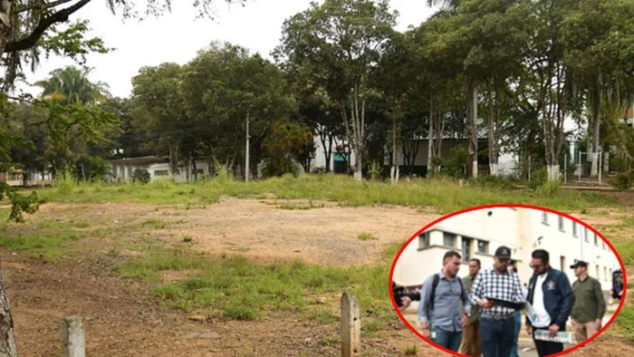

¿En qué van las obras de los colegios Dámaso Zapata y Santander? Alcalde de Bucaramanga reitera llamado a contratistas
Las obras de infraestructura educativa financiadas a través del empréstito en Bucaramanga continúan siendo objeto de seguimiento por parte de la administración municipal, que ha insistido en la necesidad de acelerar su ejecución.

Atlético Bucaramanga participa en la liga femenina 2026
El equipo de fútbol femenino de Bucaramanga se ha clasificado para participar en la liga femenina de 2026, lo que representa un logro importante para el club y la comunidad local.

Iniciativa para promover el turismo en Bucaramanga
La alcaldía de Bucaramanga ha lanzado una nueva iniciativa para promover el turismo en la ciudad, con el objetivo de atraer a más visitantes y fortalecer la economía local.